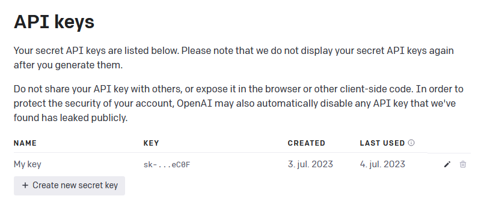
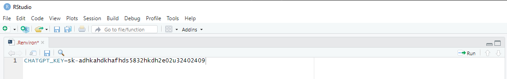

Using ChatGPT for Title and Abstract Screening in Systematic Reviews
Source:vignettes/Using-ChatGPT-For-Screening.Rmd
Using-ChatGPT-For-Screening.RmdImportant note
This vignette represent tentative work-in-progress only. The general applicability and efficacy of using large-language models (LLMs) including ChatGPT for title and abstract screening in literature reviews are still unknown. Our first results suggest that ChatGPT can be a reliable second screener when reviewing specific and well defined interventions. The first evidence of this is shown in this vignette. However, be aware that our first results are based on a retrospective analysis which might not generalize to prospective screenings where ChatGPT potentially has not been trained on that reference data, that is data added to the internet after 2021. Also note that the result presented here are for tutorial purposes only. Hard inferences about the relative efficacy of the used gpt models should be avoided.
An all-important step to ensure the quality of systematic reviews
involves detecting all relevant references related to the literature
under review. Usually, this involves independent double screening of all
references detected in relevant databases and literature with two human
screeners. This procedure has shown pivotal since less experienced
single screeners tend to miss around 13 % relavant studies (with 5 % for
experienced screeners), which in most cases substantially change the
main review findings (Waffenschmidt, 2019). Yet, double-screening is a
costly and resource intensive procedure, excluding many researchers from
using it. An alternative to human double-screening is to use automated
tools to act as the second screener (Gartlehner et al., 2019; van de
Schoot et al. 2021). Hereto, most evaluations of existing tools finds
that most automated tools fail to reliably act as/imitating a human
second screener. Meanwhile, it is still unknown how well or if the newly
developed large-language models (LLMs) such as ChatGPT can work and
possibly emulate a human second screener. The aim of the
AIscreenR package is to support the use and testing of
ChatGPT as a the second screener or alternatively to reduce research
waste. Concretely the package allows user to apply the gpt models from
the https://api.openai.com/v1/chat/completions
endpoint. In future developments, we expect to add further LLMs (such as
Bard) when APIs are available for those LLMs. For now, we invite other
researchers to test this software so that we as a review community can
get a better understanding of the performance of the gpt models from
OpenAI as second screeners. In this vignette, we show how a title and
abstract screening with ChatGPT can be done in R. The advantages of
conducting the screening with ChatGPT via R is 1) that reviewers can
easily work with a large number of references, avoiding copy-paste
procedures, 2) that the total screening time can be substantially
increased relative to using the ChatGPT interface, and 3) that
consistency between gpt answer for the same title and abstract can
easily be tested. In this vignette, we also show the first proof of
concept for the use of ChatGPT as a reliable second screener. This goes
without saying that ChatGPT works in all cases, and we think the tool
should be use carefully and should always assisted by a human
(human-in-the-loop). Consequently, we do not recommend to use the the
ChatGPT as a single screener.
Getting started: Loading relevant ris file data for screening
At this stage, we expect that you have a pile of ris-files,
containing titles and abstract for the references you would like to
screen. You can retrieve ris-files in several ways, either directly from
research database, a Google Scholar search, or exported from your
reference management tool, such as EndNote, Mendeley, and RefMan.
Alternatively, you can export ris-file from systematic software tool
such as EPPI-reviewer,
Covidence, MetaReviewer,
and revtools, or
whatever software you like. In the example given below, we load
ris-files extracted from the EPPI-reviewer. A minor advantage of
extracting ris-files from systematic software tools is that they add a
unique study ID for each reference. This feature makes it easier to keep
track of the screening. Yet, such ID can be generated in R as well, and
is automatically generated in the tabscreen_gpt() function
when unique IDs are not provided. When using ChatGPT as the second
screener, we recommend that the human screening has been done before
uploading to R. Thereby, it is possible to compare the screenings
instantly after the computer screening has been done. In the below
example we load ris-files separately for excluded and included
ris-files, respectively, and add the human_code variable
that tracks the human decision.
# Loading packages
library(AIscreenR)
library(revtools)
library(tibble)
library(dplyr)
library(purrr)
library(usethis)
library(future)
# Loading excluded studies
# Reading path to risfiles
excl_path <- system.file("extdata", "excl_tutorial.ris", package = "AIscreenR")
ris_dat_excl <- revtools::read_bibliography(excl_path) |>
suppressWarnings() |>
as_tibble() |>
select(author, eppi_id, title, abstract) |> # Using only relevant variables
mutate(
human_code = 0
)
# Loading included studies
incl_path <- system.file("extdata", "incl_tutorial.ris", package = "AIscreenR")
ris_dat_incl <- revtools::read_bibliography(incl_path) |>
suppressWarnings() |>
as_tibble() |>
select(author, eppi_id, title, abstract) |>
mutate(
human_code = 1
)
filges2015_dat <-
bind_rows(ris_dat_excl, ris_dat_incl) |>
mutate(
studyid = 1:n()
) |>
relocate(studyid, .after = eppi_id)
filges2015_dat
#> # A tibble: 150 × 6
#> author eppi_id studyid title abstract human_code
#> <chr> <chr> <int> <chr> <chr> <dbl>
#> 1 Holloway R G and Gramling R and Ke… 9434957 1 Esti… "Progno… 0
#> 2 Morawska Alina and Stallman Helen … 9433838 2 Self… "Behavi… 0
#> 3 Michel C M and Pascual-Marqui R D … 9431171 3 Freq… "The to… 0
#> 4 Paul Howard A 9433968 4 A Re… "The ar… 0
#> 5 Feinberg I and De Bie E and Davis … 9434460 5 Topo… "STUDY … 0
#> 6 Hamburg Sam R 9433554 6 BOOK… "The ar… 0
#> 7 Park H Y and Lee B J and Kim J H a… 9435130 7 Rapi… "Backgr… 0
#> 8 Petrek J 9432040 8 Pict… "AIMS: … 0
#> 9 Schwartzman Meredith P and Wahler … 9434093 9 Enha… "New an… 0
#> 10 Faber J and Srutova L and Pilarova… 9431505 10 EEG … "Sponta… 0Getting API key OpenAI
Before you can use the functions from AIscreenR, you
must generate your own secret API key. To do so you must first ensure
that you have created an account at OpenAI (if you have not done so
at this stage, you can sign up here).
When having an account, go to https://platform.openai.com/account/api-keys
and press the + Create new secret key button (see picture
below) and give your key a name.

When you have generate your secret API key, remember to store it safely since you will not be able see it again. NOTE: If you lose your API key, you can just generate a new one.
Handling your API key
Pemanent solution
To add your API key permanently as an environment variables, you can
execute usethis::edit_r_environ().

After entering the API key, save the .Renviron document
and restart RStudio (ctrl + shift + F10).
Retrieve rate limit information
# Rate limits across one model (Default is "gpt-3.5-turbo-0613")
rate_limits <- rate_limits_per_minute()
rate_limits
#> # A tibble: 1 × 3
#> model requests_per_minute tokens_per_minute
#> <chr> <dbl> <dbl>
#> 1 gpt-3.5-turbo-0613 10000 1000000
# Rate limits overview across multiple models
# Add further models if necessary
models <- c("gpt-3.5-turbo-0613", "gpt-4")
models_rate_limits <- rate_limits_per_minute(model = models)
models_rate_limits
#> # A tibble: 2 × 3
#> model requests_per_minute tokens_per_minute
#> <chr> <dbl> <dbl>
#> 1 gpt-3.5-turbo-0613 10000 1000000
#> 2 gpt-4 200 10000Working with prompts in R
Example of how to enter a prompt.
prompt <- "Evaluate the following study based on the selection criteria
for a systematic review on the effects of family-based interventions on drug
abuse reduction for young people in treatment for non-opioid drug use.
A family-based intervention (FFT) is equivalent to a behavior focused
family therapy, where young people’s drug use is understood in relation to
family behavior problems. Family-based interventions also includes manual-based
family therapies as it targets young people and their families as a system
throughout treatment, and thereby recognizes the important role of the family
system in the development and treatment of young people’s drug use problems.
FFT was developed in the late 1980s on request from the US National Institute on
Drug Abuse (NIDA). The development of FFT was initially heavily inspired by the
alcohol abuse program Community Reinforcement Approach (CRA), which was aimed
at restructuring the environment to reinforce non-alcohol associated activities.
FFT developed to have more emphasis on contingency contracting, impulse control
strategies specific to drug use, and increased emphasis on involvement of family
members in treatment. FFT is designed to accommodate diverse populations of
youths with a variety of behavioral, cultural and individual preferences.
FFT has evolved for use in severe behavioral disturbances known to co-exist with
substance use and dependence, and the core interventions have been enhanced to
address several mental health related problems commonly occurring
as comorbid conditions in drug use treatment participant. For each study,
I would like you to assess: 1) Is the study about a family-based intervention,
such as Functional Family Therapy, Multidimensional Family Therapy, or
Behavioral Family Therapy? (Outpatient manual-based interventions of any
duration delivered to young people and their families). If not, exclude study.
2) Are the participants in outpatient drug treatment primarily
for non-opioid drug use? 3) Are the participants within age 11–21?"Can also be done in word
Figure 3 - Prompt 1: With three inclusion critera.
Figure 4 - Prompt 2: With one inclusion criterion only.
word_path <- system.file("extdata", "word_pormpt_1.docx", package = "AIscreenR")
prompt1 <-
readtext::readtext(word_path)$text |>
stringr::str_remove_all("\n")
str(prompt)
#> function (object, filename = NULL, name = NULL, ...)
# Working with multiple prompts
word_paths <- system.file("extdata", c("word_pormpt_1.docx", "word_pormpt_2.docx"), package = "AIscreenR")
prompts <-
purrr::map_chr(
word_paths, ~ {
readtext::readtext(.x)$text |>
stringr::str_remove_all("\n")
}
)
prompts
#> [1] "Evaluate the following study based on the selection criteria for a systematic review on the effects of family-based interventions on drug abuse reduction for young people in treatment for non-opioid drug use. A family-based intervention (FFT) is equivalent to a behavior focused family therapy, where young people’s drug use is understood in relation to family behavior problems. Family-based interventions also include manual-based family therapies as it target young people and their families as a system throughout treatment, and thereby recognize the important role of the family system in the development and treatment of young people’s drug use problems. FFT was developed in the late 1980s on request from the US National Institute on Drug Abuse (NIDA). The development of FFT was initially heavily inspired by the alcohol abuse program Community Reinforcement Approach (CRA), which was aimed at restructuring the environment to reinforce non-alcohol associated activities. FFT was developed to have more emphasis on contingency contracting, impulse control strategies specific to drug use, and increased emphasis on the involvement of family members in treatment. FFT is designed to accommodate diverse populations of youths with a variety of behavioral, cultural and individual preferences. FFT has evolved for use in severe behavioral disturbances known to co-exist with substance use and dependence, and the core interventions have been enhanced to address several mental health related problems commonly occurring as comorbid conditions in drug use treatment participant. For each study, I would like you to assess: 1) Is the study about a family-based intervention, such as Functional Family Therapy, Multidimensional Family Therapy, or Behavioral Family Therapy? (Outpatient manual-based interventions of any duration delivered to young people and their families). If not, exclude study. 2) Are the participants in outpatient drug treatment primarily for non-opioid drug use? 3) Are the participants within age 11–21?"
#> [2] "Evaluate the following study based on the selection criteria for a systematic review on the effects of family-based interventions on drug abuse reduction for young people in treatment for non-opioid drug use. A family-based intervention (FFT) is equivalent to a behavior focused family therapy, where young people’s drug use is understood in relation to family behavior problems. Family-based interventions also include manual-based family therapies as it target young people and their families as a system throughout treatment, and thereby recognize the important role of the family system in the development and treatment of young people’s drug use problems. FFT was developed in the late 1980s on request from the US National Institute on Drug Abuse (NIDA). The development of FFT was initially heavily inspired by the alcohol abuse program Community Reinforcement Approach (CRA), which was aimed at restructuring the environment to reinforce non-alcohol associated activities. FFT was developed to have more emphasis on contingency contracting, impulse control strategies specific to drug use, and increased emphasis on the involvement of family members in treatment. FFT is designed to accommodate diverse populations of youths with a variety of behavioral, cultural and individual preferences. FFT has evolved for use in severe behavioral disturbances known to co-exist with substance use and dependence, and the core interventions have been enhanced to address several mental health related problems commonly occurring as comorbid conditions in drug use treatment participant. For each study, I would like you to assess: 1) Is the study about a family-based intervention, such as Functional Family Therapy, Multidimensional Family Therapy, or Behavioral Family Therapy? (Outpatient manual-based interventions of any duration delivered to young people and their families). If not, exclude study. "Approximate price of screening
Approximate price of screening
models <- c("gpt-3.5-turbo-0613", "gpt-3.5-turbo-0613", "gpt-4")
reps <- c(1, 10, 1)
app_obj <-
approximate_price_gpt(
data = filges2015_dat, # Tutorial data embedded in the package
prompt = prompts,
studyid = studyid, # indicate the variable with the studyid in the data
title = title, # indicate the variable with the titles in the data
abstract = abstract, # indicate the variable with the abstracts in the data
model = models,
reps = reps
)
app_obj
#> The approximate price of the (simple) screening will be around $15.5704.
app_obj$price_dollar
#> [1] 15.5704
app_obj$price_data
#> # A tibble: 3 × 5
#> model iterations input_price_dollar output_price_dollar total_price_dollor
#> <chr> <dbl> <dbl> <dbl> <dbl>
#> 1 gpt-3.5-… 1 0.493 0.0066 0.500
#> 2 gpt-3.5-… 10 4.94 0.066 5.00
#> 3 gpt-4 1 9.87 0.198 10.1Screening titles and abstracts
models <- c("gpt-3.5-turbo-0613", "gpt-3.5-turbo-0613", "gpt-4")
reps <- c(1, 10, 1)
rpm <- c(10000, 10000, 200)
plan(multisession)
result_object <-
tabscreen_gpt(
data = filges2015_dat, # ris-file data create above
prompt = prompt, # indicate name of the loaded prompt object
studyid = studyid, # indicate the variable with the studyid in the data
title = title, # indicate the variable with the titles in the data
abstract = abstract, # indicate the variable with the abstracts in the data,
model = models,
reps = reps,
rpm = rpm
)
#> * The approximate price of the current (simple) screening will be around $15.6473.
#> * Consider removing references that has no abstract since these can distort the accuracy of the screening
#> Progress: ──────────────────────────────────────────────────────────────────────────────────────────── 100%
#> * NOTE: Requests falied 6 times."
plan(sequential)
print(result_object)
#> Find data with all answers by executing
#> result_object$answer_data_all
#>
#> Find data with the result aggregated across multiple answers by executing
#> result_object$answer_data_sum
#>
#> Find total price for the screening by executing
#> result_object$price_dollor
#>
#> Find error data by executing
#> result_object$error_dataGetting the results from the screening
# gpt-3.5 results (prompt 1 - 10 replications)
# studyid = 21 is not included since it failed during the loop
# I show how to recover this in another
sum_dat_gpt3 <-
result_object$answer_data_sum |>
filter(stringr::str_detect(model, "3") & promptid == 1 & reps == 10)
print(sum_dat_gpt3, width = 220)
#> # A tibble: 149 × 16
#> author
#> <chr>
#> 1 Holloway R G and Gramling R and Kelly A G
#> 2 Morawska Alina and Stallman Helen M and Sanders Matthew R and Ralph Alan
#> 3 Michel C M and Pascual-Marqui R D and Strik W K and Koenig T and Lehmann D
#> 4 Paul Howard A
#> 5 Feinberg I and De Bie E and Davis N M and Campbell I G
#> 6 Hamburg Sam R
#> 7 Park H Y and Lee B J and Kim J H and Bae J N and Hahm B J
#> 8 Petrek J
#> 9 Schwartzman Meredith P and Wahler Robert G
#> 10 Faber J and Srutova L and Pilarova M and Vuckova Z and Bohmova D and Dobosov…
#> eppi_id human_code studyid title abstract promptid prompt model question
#> <chr> <dbl> <int> <chr> <chr> <int> <chr> <chr> <chr>
#> 1 9434957 0 1 Estimatin… "Progno… 1 Evalu… gpt-… "Evalua…
#> 2 9433838 0 2 Self-Dire… "Behavi… 1 Evalu… gpt-… "Evalua…
#> 3 9431171 0 3 Frequency… "The to… 1 Evalu… gpt-… "Evalua…
#> 4 9433968 0 4 A Review … "The ar… 1 Evalu… gpt-… "Evalua…
#> 5 9434460 0 5 Topograph… "STUDY … 1 Evalu… gpt-… "Evalua…
#> 6 9433554 0 6 BOOK REVI… "The ar… 1 Evalu… gpt-… "Evalua…
#> 7 9435130 0 7 Rapid imp… "Backgr… 1 Evalu… gpt-… "Evalua…
#> 8 9432040 0 8 Pictorial… "AIMS: … 1 Evalu… gpt-… "Evalua…
#> 9 9434093 0 9 Enhancing… "New an… 1 Evalu… gpt-… "Evalua…
#> 10 9431505 0 10 EEG spect… "Sponta… 1 Evalu… gpt-… "Evalua…
#> top_p incl_p final_decision_gpt final_decision_gpt_num reps n_mis_answers
#> <dbl> <dbl> <chr> <dbl> <int> <int>
#> 1 1 0 Exclude 0 10 0
#> 2 1 0.6 Include 1 10 0
#> 3 1 0 Exclude 0 10 0
#> 4 1 0 Exclude 0 10 0
#> 5 1 0.1 Exclude 0 10 0
#> 6 1 0 Exclude 0 10 0
#> 7 1 0 Exclude 0 10 0
#> 8 1 0 Exclude 0 10 0
#> 9 1 0 Exclude 0 10 0
#> 10 1 0 Exclude 0 10 0
#> # ℹ 139 more rows
# gpt-4 results (prompt 1)
sum_dat_gpt4 <-
result_object$answer_data_sum |>
filter(stringr::str_detect(model, "4") & promptid == 1)
print(sum_dat_gpt4, width = 220)
#> # A tibble: 150 × 16
#> author
#> <chr>
#> 1 Holloway R G and Gramling R and Kelly A G
#> 2 Morawska Alina and Stallman Helen M and Sanders Matthew R and Ralph Alan
#> 3 Michel C M and Pascual-Marqui R D and Strik W K and Koenig T and Lehmann D
#> 4 Paul Howard A
#> 5 Feinberg I and De Bie E and Davis N M and Campbell I G
#> 6 Hamburg Sam R
#> 7 Park H Y and Lee B J and Kim J H and Bae J N and Hahm B J
#> 8 Petrek J
#> 9 Schwartzman Meredith P and Wahler Robert G
#> 10 Faber J and Srutova L and Pilarova M and Vuckova Z and Bohmova D and Dobosov…
#> eppi_id human_code studyid title abstract promptid prompt model question
#> <chr> <dbl> <int> <chr> <chr> <int> <chr> <chr> <chr>
#> 1 9434957 0 1 Estimatin… "Progno… 1 Evalu… gpt-4 "Evalua…
#> 2 9433838 0 2 Self-Dire… "Behavi… 1 Evalu… gpt-4 "Evalua…
#> 3 9431171 0 3 Frequency… "The to… 1 Evalu… gpt-4 "Evalua…
#> 4 9433968 0 4 A Review … "The ar… 1 Evalu… gpt-4 "Evalua…
#> 5 9434460 0 5 Topograph… "STUDY … 1 Evalu… gpt-4 "Evalua…
#> 6 9433554 0 6 BOOK REVI… "The ar… 1 Evalu… gpt-4 "Evalua…
#> 7 9435130 0 7 Rapid imp… "Backgr… 1 Evalu… gpt-4 "Evalua…
#> 8 9432040 0 8 Pictorial… "AIMS: … 1 Evalu… gpt-4 "Evalua…
#> 9 9434093 0 9 Enhancing… "New an… 1 Evalu… gpt-4 "Evalua…
#> 10 9431505 0 10 EEG spect… "Sponta… 1 Evalu… gpt-4 "Evalua…
#> top_p incl_p final_decision_gpt final_decision_gpt_num reps n_mis_answers
#> <dbl> <dbl> <chr> <dbl> <int> <int>
#> 1 1 0 Exclude 0 1 0
#> 2 1 0 Exclude 0 1 0
#> 3 1 0 Exclude 0 1 0
#> 4 1 0 Exclude 0 1 0
#> 5 1 0 Exclude 0 1 0
#> 6 1 0 Exclude 0 1 0
#> 7 1 0 Exclude 0 1 0
#> 8 1 0 Exclude 0 1 0
#> 9 1 0 Exclude 0 1 0
#> 10 1 0 Exclude 0 1 0
#> # ℹ 140 more rowsAnalyzing the screening
False included and excluded (by gpt)
screen_perform <-
result_object |>
screen_analyzer()
print(screen_perform, width = 200)
#> # A tibble: 6 × 20
#> promptid model reps top_p n_screened n_missing n_refs n_false_ex
#> <int> <chr> <int> <dbl> <int> <int> <int> <dbl>
#> 1 1 gpt-3.5-turbo-0613 1 1 150 0 150 12
#> 2 1 gpt-3.5-turbo-0613 10 1 149 1 150 8
#> 3 1 gpt-4 1 1 149 1 150 4
#> 4 2 gpt-3.5-turbo-0613 1 1 150 0 150 15
#> 5 2 gpt-3.5-turbo-0613 10 1 149 1 150 12
#> 6 2 gpt-4 1 1 147 3 150 4
#> n_false_in n_true_in n_true_ex accuracy p_agreement sensitivity specificity
#> <dbl> <dbl> <dbl> <dbl> <dbl> <dbl> <dbl>
#> 1 8 38 92 0.133 0.867 0.76 0.92
#> 2 9 42 90 0.113 0.887 0.84 0.909
#> 3 9 46 90 0.0867 0.913 0.92 0.909
#> 4 8 35 92 0.153 0.847 0.7 0.92
#> 5 7 38 92 0.127 0.873 0.76 0.929
#> 6 7 45 91 0.0733 0.927 0.918 0.929
#> kappa level_of_agreement SE_kappa CL_kappa CU_kappa
#> <dbl> <chr> <dbl> <dbl> <dbl>
#> 1 0.694 Moderate 0.0121 0.670 0.718
#> 2 0.751 Moderate 0.0118 0.728 0.774
#> 3 0.813 Strong 0.0107 0.792 0.834
#> 4 0.642 Moderate 0.0126 0.618 0.667
#> 5 0.714 Moderate 0.0120 0.690 0.737
#> 6 0.845 Strong 0.0101 0.825 0.865References
Gartlehner, G., Wagner, G., Lux, L. et al. (2019). Assessing the accuracy of machine-assisted abstract screening with DistillerAI: a user study. Systematic Reviews. 8, 1-10. https://doi.org/10.1186/s13643-019-1221-3
McHugh, M. L. (2012). Interrater reliability: The kappa statistic. Biochemia Medica, 22(3), 276–282.
Waffenschmidt, S., Knelangen, M., Sieben, W., Bühn, S., & Pieper, D. (2019). Single screening versus conventional double screening for study selection in systematic reviews: a methodological systematic review. BMC Medical Research Methodology 19, 1-9. https://doi.org/10.1186/s12874-019-0782-0
Westgate MJ (2019). revtools: An R package to support article screening for evidence synthesis. Research Synthesis Methods. https://doi.org/10.1002/jrsm.1374.